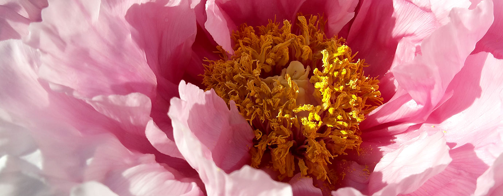
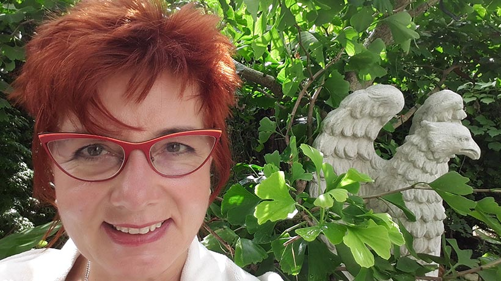

Coaching
Der Weg in die Leichtigkeit und Freude.
Ich bin Stella Maria Blumenfelder, Friseurmeisterin und zertifizierte Haut- & Haarpraktikerin. Seit 1999 arbeite ich konsequent mit 100 % Natur: Pflanzenhaarfarbe statt Chemie und eine Beratung, die sich Zeit für Sie nimmt.

Ich nehme Sie wahr und begleite Sie
Haut und Haar stehen im Mittelpunkt. Coaching, Spiritualität und Wellness ergänzen meine Arbeit – für Körper, Geist und Seele.
Haut & Haar
Haut und Haare lügen nicht – sie zeigen, wie es uns geht. Deshalb schaue ich nicht nur auf die Frisur, sondern auf Kopfhaut, Haarstruktur und Ihr Wohlbefinden.
Ihr erster Termin: In der Haarsprechstunde stelle ich eine Haardiagnose. Kopfhaut und Haar beurteile ich nur persönlich – Ferndiagnosen per Telefon oder Video sind nicht möglich.
Persönliche Beratung bei Kopfhautjucken, Haarbruch, dünnem oder chemisch überbehandeltem Haar.
auf AnfrageRein pflanzliche Farbe aus 28 Pflanzen – vegan und voll biologisch abbaubar.
ab 80 €Ein Schnitt nach dem natürlichen Fall Ihrer Haare – frei von Modediktaten.
100–140 €Regt die Durchblutung der Kopfhaut an und schenkt natürlichen Glanz.
40 €Aktiviert Körperenergie, löst Blockaden und steigert das Wohlempfinden.
ab 40 €Laboranalyse der Mineralstoffe mit Ernährungsberatung nach Dr. Bruker.
auf AnfrageSpezialität der Praxis
Konsequent rein pflanzlich – gewonnen aus getrockneten, pulverisierten Blättern und Blüten. Ich pflege mit Produkten von Culum Natura und Oliebe.
Pflanzen in der Farbe, zum Beispiel
Ihr persönliches Farbbild erarbeiten wir gemeinsam in einer intensiven Farbberatung.
Farbberatung anfragenKörper, Geist und Seele
Wer sich körperlich nicht wohlfühlt, ist oft auch seelisch belastet – und umgekehrt. Diese Angebote ergänzen meine Arbeit an Haut und Haar.
Der Weg in die Leichtigkeit und Freude.
Einzel-Sitzungen, Channelings und öffentliche Auftritte.
Entspannung pur – auf Liege oder Stuhl.
Hinweis: Als Heilerin aktiviere ich die Selbstheilungskräfte. Meine Arbeit ersetzt keine ärztliche Diagnose oder Behandlung.

Über mich
Es gibt kein schlechtes Haar – nur ein schlecht behandeltes Haar.
In meiner Praxis erwartet Sie eine gelassene, ruhige Atmosphäre mit ausgewählten, konsequenten Naturprodukten – und eine intensive, liebevolle Beratung, stets persönlich und mit viel Zeit für Sie.
Angebote & Honorare
Ein Auszug aus meiner Preisliste. Viele Leistungen biete ich nach Absprache auch mobil und für Gruppen an.
Ich arbeite ausschließlich mit natürlichen Produkten – ohne Chemie wie Thioglykolsäure oder Wasserstoffperoxid. Gefärbt wird mit 100 % Pflanzenhaarfarbe, gepflegt mit Naturkosmetik von Culum Natura und Oliebe.
Termine vereinbaren Sie telefonisch unter 08231 607880 oder per E-Mail. Bei der ersten Haarsprechstunde stelle ich eine Haardiagnose; Ferndiagnosen sind nicht möglich.
Ja. Pflanzenhaarfarbe stärkt jedes Haar, auch chemisch gefärbtes, und gleicht strukturgeschädigtes Haar aus. Das passende Farbbild erarbeiten wir in einer Farbberatung.
Nein. Ich aktiviere die Selbstheilungskräfte und weise vor jeder Behandlung darauf hin, dass meine Arbeit keine ärztliche Tätigkeit ersetzt.
Bei Läusen oder Virenbefall ist eine schriftliche ärztliche Bestätigung nötig, bevor eine Beratung oder Behandlung stattfinden kann.
Viele Leistungen, Vorträge und Gruppenangebote sind nach Absprache auch mobil möglich – in Königsbrunn, Augsburg und Umgebung.
Termin vereinbaren
Ich freue mich auf Ihren Anruf oder Ihre Nachricht – und darauf, Sie und Ihre Haar-Krone kennenzulernen.